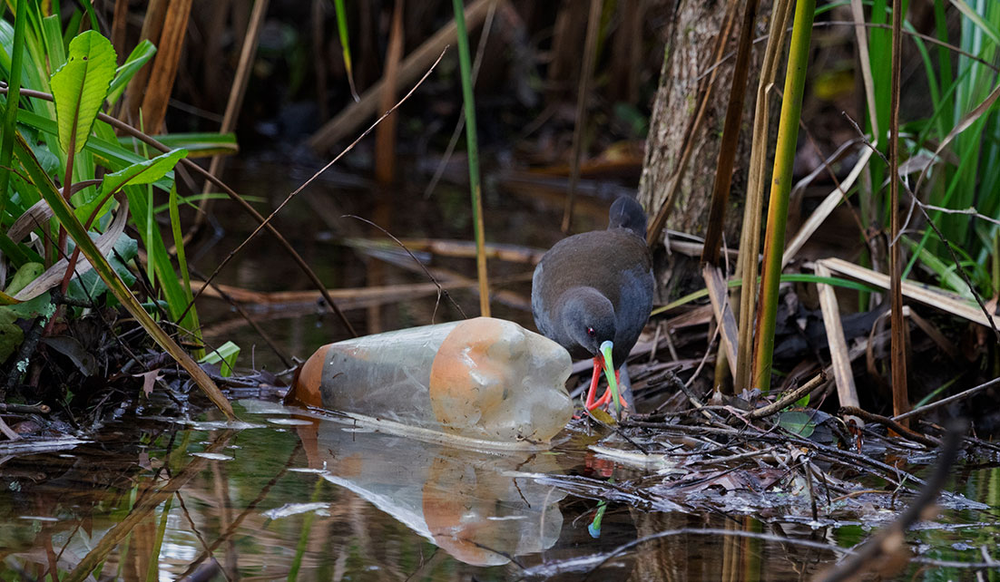
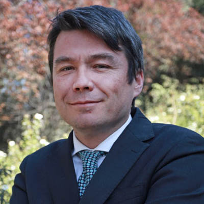
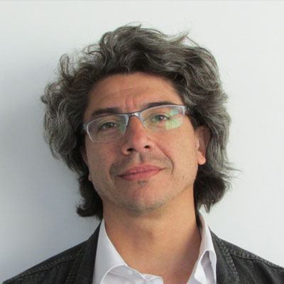
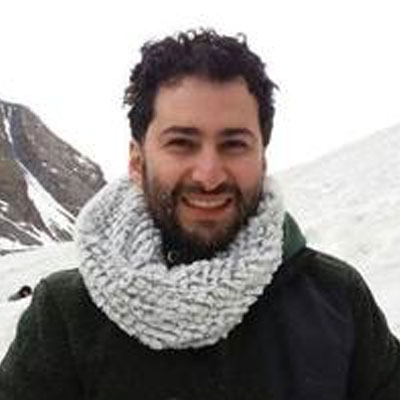
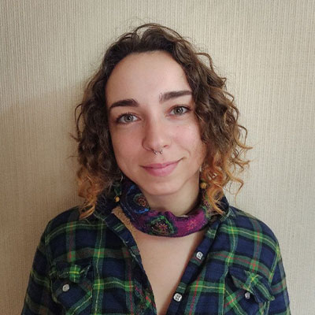

Marcelo Mena
Director ejecutivo
Equipo


Álex Sánchez
Coordinador ejecutivo
Coordinador ejecutivo
Constance Nalegach
Coordinadora General Proyecto Centro de Acción Climática
Coordinadora General Proyecto Centro de Acción Climática
José Tomás Videla
Coordinador Planes de Adaptación
Coordinador Planes de Adaptación

Claudio Carrasco Aldunate
Equipo Ejecutivo
Equipo Ejecutivo

Dr. Víctor Salinas
Coordinador del Diplomado en Acción Climática CIDSTEM-CAC PUCV
Coordinador del Diplomado en Acción Climática CIDSTEM-CAC PUCV
Gonzalo Guerrero
Equipo ejecutivo
Equipo ejecutivo

Justinne Ryberrt
Equipo ejecutivo
Equipo ejecutivo

Vicente Gajardo
Equipo ejecutivo
Equipo ejecutivo
Daniela León M.
Encargada Comunicaciones
Encargada Comunicaciones